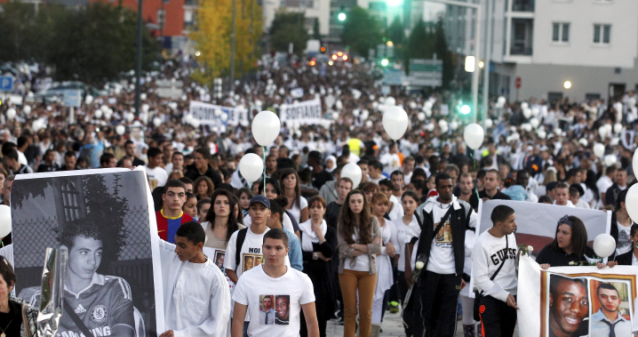
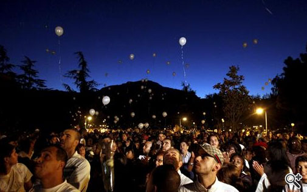
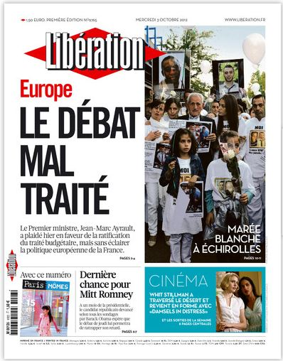

Charte du Collectif Marche Blanche
La tragédie du 28 septembre 2012, touchant Echirolles, mais bien au-delà, a fait naître immédiatement un Collectif afin de réagir à cet enchaînement de la violence par un immense mouvement qui s’est exprimé par une marche blanche qui a regroupé des milliers de personnes.
La mémoire de Kevin et Sofiane a réveillé en nous une force afin d’agir comme nous le pouvons pour la construction d’une société non-violente, en sachant que la première violence est l’exclusion en son sein d’une part importante de la Population, notamment des jeunes.
Nous désirons bâtir notre action sur un socle de valeurs communes telles que :
1- le refus de la violence, en sachant que celle-ci entretient un engrenage sans fin
2- la volonté de bâtir ensemble notre société, en sachant que les diversités enrichissent la collectivité autant que chaque personne
3- le respect de chacun qui permet d’élaborer des projets communs.
4- l’éducation donnant à chaque personne les moyens de se former, de s’informer, d’avoir une place dans la société.
5- la lutte contre l’indifférence, celle-ci générant des murs, des incompréhensions, des fausses idées, des haines irraisonnées.
6- l’action, à la fois sur les citoyens et auprès des autorités, afin que les réactions citoyennes que nous avons connues ne soient pas sans lendemain, mais au contraire créent des conditions réelles d’une situation sociale acceptable pour tous.
Tous ceux qui se reconnaissent dans cette charte peuvent participer à nos réflexions et actions.

Le vibrant hommage de Calogero au collectif

Le résumé de la marche blanche
